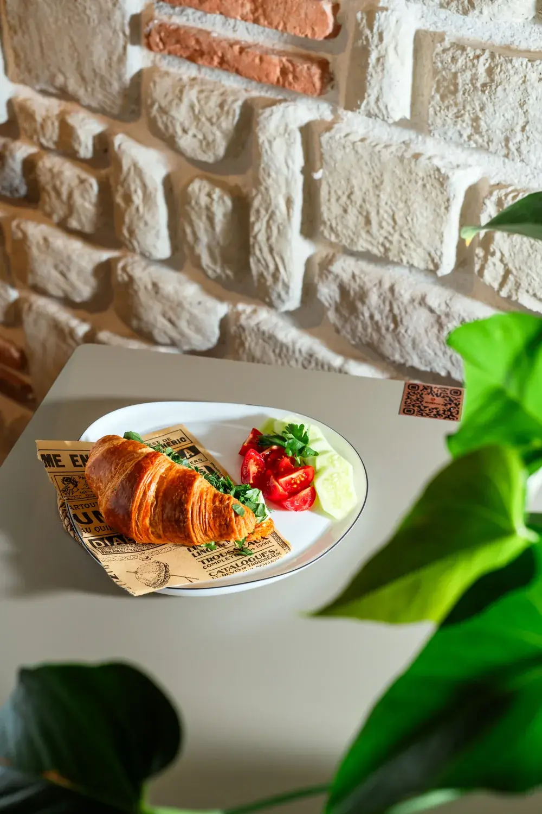

Három hangulat.
Egy jó reggel.
A jóváhagyott szövegre és a Hajnali retró arculatra épülő három főoldali terv. Válassz egy irányt, és abból készül el a teljes, hatoldalas weboldal.
01

Szerkesztőségi
Nyugodt, nagy tipográfia és oldalra rendezett kenyérfotó.
Megnézem ↗02Retró plakát
Karakteres címek, pecsét és kétképes nyitórész.
Megnézem ↗03
Reggeli mozaik
Életteli képrács, hangsúlyos nyitvatartás és változatos ritmus.
Megnézem ↗Ezek főoldali látványtervek. Az előrendelő űrlap és a további oldalak a választott irány után készülnek.